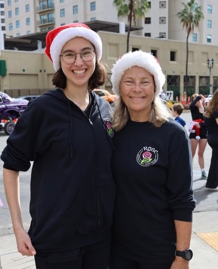

|
The most exciting event in 2023 for me was Lisa's return to San Diego. After 5 years in the UK, she decided to move back home and is currently working at Trader Joe's (supermarket) while she decides what she wants to do next. Her current favorite idea is to return to college next year to get a teaching credential. It has been SO nice to have her here again!
I started reading last year's Christmas letter and chuckled to myself about the intention to find a new home for the rambunctious dogs I had foolishly fostered over the summer. Suffice it to say, dogs that dig up your yard and eat your furniture are hard to find homes for - no matter how cute they look. At least they keep me walking and meeting neighbors.
The house remodel was finally finished in April so I now have a fabulous master bathroom. Still questioning whether it was worth it - but the repiping of the plumbing was definitely needed, so it does make sense that the bathroom was updated at the same time.
|
I love hanging out with the people in my running club (West Coast Roadrunners). We train on Saturday mornings but this year I have cut back on the number of races I entered to reduce the costs. I took part in the 12-hour "Pirate's Cove" run/walk event at Lake Cuyamaca again (see above left). The snow and ice made it really challenging, but the blue sky was a great improvement on the torrential rains of last year. In June, I completed the Rock and Roll Half Marathon again (with quite a few of my run club friends - see above right) and later this month, I plan to run the local Holiday Half Marathon. In addition to running, we often meet up for brunch after a run and occasionally go bowling, swimming, paddle boarding, or playing pickleball. They are a fun crowd!
This year Irish dance took me to Nashville, Tennessee for the first time (see above). My team competed in the North American Irish Dance Championship (NAIDC) and we decided to stay for a few days to check out Nashville and Memphis. Such a fun trip! We stayed and danced at the Gaylord resort, took in a show at the Grand Ole Opry (wasn't worth it), and while downtown we visited The Museum of African American Music (well worth it). We also got to experience some local classics such as Buc-ee's (you have to go there to understand this) and a Waffle House.
|
In addition to dancing, adult dance team members enjoyed hanging out together to take in some of the sites of Nashville.
In Memphis, we went to Graceland (such sadness there), saw the ducks march at The Peabody (best to google it), then spent the evening enjoying the sights and sounds of Beale St (a highlight of the trip). On our final day we visited the National Civil Rights Museum, situated by the site of the assassination of Dr. Martin Luther King Jr. We had to set an alarm to make ourselves leave there in time to catch our flight because there was so much to absorb.
I am very thankful that the absence of travel restrictions has allowed friends to come visit this year. It was great to see Christine (a friend since middle school) and her husband Dave. Also, the first friend I made in California, Mallory, whose job now brings her to San Diego from time to time.
Happily, I was retained by my school for the 2023-24 school year and continune to enjoy working with the great team of people there. I hope that this will be my forever school.
Wishing you all a very happy
holiday season!
Love, Jackie

|